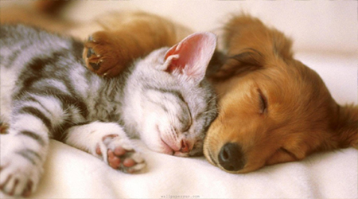
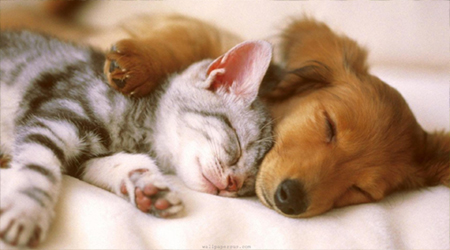

The Pawfect Pair
Cats and Dogs have ruled the Internet (and pretty much, our entire lives) for as long as we could remember. So, why are they part of our everyday distractions? They're just too darn cute. For feline-lovers, visit this page to see the cats that ruled the Internet in 2015, and for man's best furriest friends in 2015, come here.